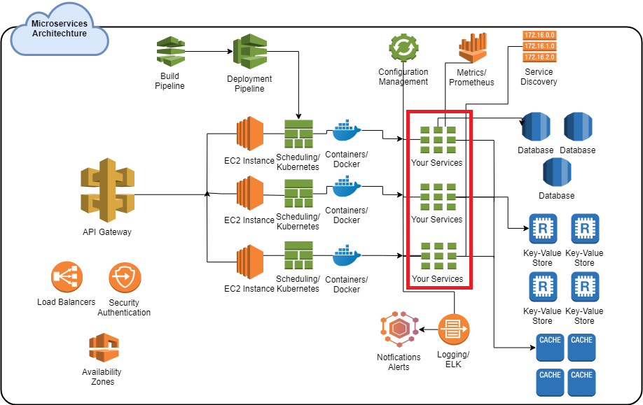

Building Scalable Microservices with Go
Live Deck: https://deck.nullocated.com/fcip
Deck Source:
https://github.com/cchamplin/focoip-go-ms-deck
Software Engineer | Hobbyist | Devops | Climber | Traveler
Who is this person?
Caleb Champlin
 caleb.champlin@gmail.com
caleb.champlin@gmail.com github.com/cchamplin
github.com/cchamplin
- The type of person that has 500+ tabs open in Chrome
Beer Lover | Educator | Contributor | Outdoor Enthusiast
Microservices
- Can solve a lot of problems, but present their own challenges
Microservices
Microservices (the good)
- Can help break up teams and make working on large sets of code easier
- Help the organization move faster
- Usually fundamentally easier to reason about
- Can make handling load considerably easier (this is a misnomer, scaling is never "easy")
Microservices (the challenges)
- Need a lot of planning
- Convolute sharing resources, databases, work boundaries
- Scaling requires LOTS of infrastructure, expertise, and trial and error
- Things now have to talk to each other, this is harder than it sounds
Microservices (challenges cont.)
- Debugging services working in conjunction can be a nightmare
- Everything is decentralized - logging, testing, monitoring and tracing
- Your security surface area goes way up

Go

- Go originated out of Google
- Highly opinionated (idiomatic)
- C style(ish)
More on go
- Statically typed and compiled, it has a runtime and a garbage collector but no VM (so its not like Java)

Binaries have the whole runtime
No JIT (re)compilation
Managed memory (GC)
No JIT (re)compilation
Managed memory (GC)
More on go
- Lots of concurrency primitives are language features

Goroutines == Run asynchronous + Thin Threads
More on go
- Can come pretty close to C efficiency if you're doing thing idiomatically
More on go
- Go is pretty adverse to "magic"
Clean Code!
func main() {
for {
conn := in.accept()
go handle_conn(conn)
}
}
How do I start?
- Play around
- Start small with distinct parts
- You'll want to use a framework
Keep it simple
- Focus on the business logic your service should be performing
- If you're spending a bunch of time developing a really complex logging framework for each of your services, you're doing it wrong
- Don't roll your own:
- Databases
- Service Discovery
- Tracing
- Cryptography
- *Consensus Algorithms*
Building Services in Go
- Some of the available frameworks/toolkits:
- Go-Kit
- Micro
- gizmo
- Kite

Patterns: Services
type Service interface {
ScheduleNewFlight(ctx context.Context,
routeNumber route.RouteNumber) (flight.FlightID, error)
LoadFlight(ctx context.Context, id flight.FlightID) (Flight, error)
RequestFlightsForDate(ctx context.Context,
originAirportID airport.AirportCode,
destinationAirportID airport.AirportCode,
date time.Time) ([]Flight, error)
CancelFlight(ctx context.Context, id flight.FlightID) error
Flights(ctx context.Context) []Flight
}
Patterns: Middleware
var fms Service
fms = services.NewService(flights.db)
fms = services.NewLoggingService(log.With(logger, "component","flightmanager"), fms)
fms = services.NewInstrumentingService(..., fms)
type loggingService struct {
logger log.Logger
Service
}
func NewLoggingService(logger log.Logger, s Service) Service {
return &loggingService{logger, s}
}
Patterns: Middleware
Instrumenting/Metrics
func (s *instrumentingService) ScheduleNewFlight(ctx context.Context, ...) (...) {
defer func(begin time.Time) {
s.requestCount.With("method", "schedule").Add(1)
s.requestLatency.With("method", "schedule").Observe(time.Since(begin))
}(time.Now())
return s.Service.ScheduleNewFlight(ctx, routeNumber)
}
Logging
func (s *loggingService) ScheduleNewFlight(ctx context.Context, ...) (...) {
defer func(begin time.Time) {
s.logger.Log(
"method", "schedule_flight",
"route_number", routeNumber,
"took", time.Since(begin),
)
}(time.Now())
return s.Service.ScheduleNewFlight(ctx, routeNumber)
}
Patterns: Circuitbreaking
return func(next endpoint.Endpoint) endpoint.Endpoint {
return func(ctx context.Context, request interface{}) (response...) {
var resp interface{}
if err := hystrix.Do("get-passengers", func() (err error) {
resp, err = next(ctx, request)
return err
}, func(err err) {
// Do this as a fallback if the request
// fails or times out.
logger.Log("fallback-cause", err.Error())
resp, err = responseFromStaleCache(ctx, request)
return err
}); err != nil {
return nil, err
}
return resp, nil
}
}
Patterns: Tracing
func (s *tracingService) ScheduleNewFlight(ctx context.Context, ...) (...) {
span, _ := s.tracer.StartSpanFromContext(ctx, "LoadRoute")
defer span.Finish()
return s.Service.ScheduleNewFlight(ctx, routeNumber)
}
Patterns: Return Fast
func (s *Service) SaveToCache(ctx context.Context, ...) (...) {
confirmations := make(chan bool)
totalConfirmations := 0
// Async replicate data to three caches
go replicateToCache(confirmations, responseData, 3)
timeout := time.After(3 * time.Second)
// Wait until we have two confirmations
for {
select {
case <-confirmations:
totalConfirmations += 1
if totalConfirmations >= 2 {
// Return before replications have completed, we have at least two
// the third will still happen, we just don't need to wait
return ..., nil
}
case <-timeout:
return ..., errors.New(...)
}
}
}
Patterns: Feature Flags
func (s *flaggedService) ScheduleNewFlight(ctx context.Context, ...) (...) {
if s.HasFlag("use-new-scheduler") {
return s.Service.ScheduleNewFlightV2(ctx, routeNumber, ...)
} else {
return s.Service.ScheduleNewFlight(ctx, routeNumber)
}
}
Epoch
- Experimental microservices, not a lot of complexity upfront
- Start small and with distinct parts
- Identify your domain context boundaries
- Start to develop your API
Diving into scaling

- Start running multiple instances of services, likely manually scheduling
- Start experiencing performance issues and debugging, bottle necks
- Build pipelines
- Regret every decision you've ever made in life
- Replace components as necessary, use pre-vetted third party projects, figure out dependency management that works for you
Full speed ahead
- (If 10 services is good, 100 services should be great!)
- Service discovery
- Aggregation of everything and all the infrastructure that requires
- Logs, Metrics, Monitoring Data, Alerting, and People Management
- Redundancy for Everything
- Build pipelines, Service discovery, Deployments, People, Scheduling
- Scaling dozens or hundreds of services and nodes across servers
Regret
- Scaling hundreds or thousands of nodes across data centers
- Terms like "fire-hose", "cascading-failure", "partition/fault tolerance" are every day phrases
- "Microservices are stupid"
- Simulating failures at scale
- Redesigns of entire sets of services
- $$$ you're either making lots of it or setting it on fire.
Enlightenment
- I Am Woke
- #Woke
- #Microservices4Life
- Outages happen but only because of extreme edge cases
- Lots of things are becoming managed
- Everything is big picture, single failures are typically discarded
- $$$ You're making lots of it or it doesn't matter how much of it you're burning because "investors"
Architecture
Scaling Gone Wrong
Scaling Gone Wrong
Scaling Gone Wrong: Fixed
Bin-Packing
Bin-Packing